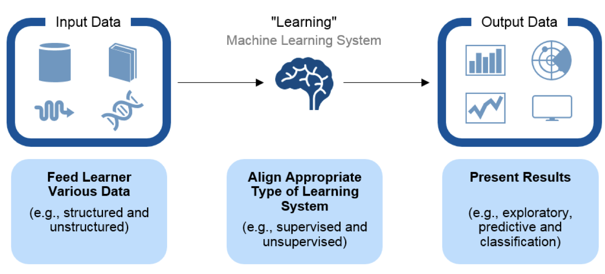

人工智能主要分支

- 人工智能和机器学习，深度学习的关系
- 机器学习是人工智能的一个实现途径
- 深度学习是机器学习的一个方法发展而来
1 主要分支介绍
1.1 分支一：知识图谱


1.2 分支二：语音识别
• 距离小于1米，中文字准率97%+
• 支持耳语、长语音、中英文混合及方言

1.3 分支三：人脸识别
检测，查找，对比

1.4 分支四：用户画像

2 机器学习工作流程概述

拓展一：
深度学习 —— 神经网络简介

卷积网络之父：Yann LeCun

神经网络各层负责内容：
1层：负责识别颜色及简单纹理

2层：一些神经元可以识别更加细化的纹理，布纹，刻纹，叶纹等

3层：一些神经元负责感受黑夜里的黄色烛光，高光，萤火，鸡蛋黄色等。

4层：一些神经元识别萌狗的脸，宠物形貌，圆柱体事物，七星瓢虫等的存在。

5层：一些神经元负责识别花，黑眼圈动物，鸟，键盘，原型屋顶等。

增加层数：通过更抽象的概念识别物体，器官层，分子层，原子层。
增加结点数：增加同一层物质的种类。

拓展二：
人工智能的必备三要素：
- 数据
- 算法
- 计算力
逐层、分布、并行算法能力提升 GPU、FPGA、TPU能力大幅提升GPU与CPU对比

Cache, local memory： CPU > GPU
Threads(线程数): GPU > CPU
SIMD Unit(单指令多数据流,以同步方式，在同一时间内执行同一条指令): GPU > CPU
- 1,GPU 加速计算可以将应用程序计算密集部分的工作负载转移到 GPU，同时仍由 CPU 运行其余程序代码。从用户的角度来看，应用程序的运行速度明显加快.
- 2,CPU 由专为顺序串行处理而优化的几个核心组成，而 GPU 则拥有一个由数以千计的更小、更高效的核心（专为同时处理多重任务而设计）组成的大规模并行计算架构.

- 3,CPU需要很强的通用性来处理各种不同的数据类型，同时又要逻辑判断又会引入大量的分支跳转和中断的处理。这些都使得CPU的内部结构异常复杂。而GPU面对的则是类型高度统一的、相互无依赖的大规模数据和不需要被打断的纯净的计算环境。GPU采用了数量众多的计算单元和超长的流水线，但只有非常简单的控制逻辑并省去了Cache。而CPU不仅被Cache占据了大量空间，而且还有复杂的控制逻辑和诸多优化电路，相比之下计算能力只是CPU很小的一部分.

- 提问：什么类型的程序适合在GPU上运行？
（1）计算密集型的程序。所谓计算密集型(Compute-intensive)的程序，就是其大部分运行时间花在了寄存器运算上，寄存器的速度和处理器的速度相当，从寄存器读写数据几乎没有延时。可以做一下对比，读内存的延迟大概是几百个时钟周期；读硬盘的速度就不说了，即便是SSD, 也实在是太慢了。
（2）易于并行的程序。GPU其实是一种SIMD(Single Instruction Multiple Data)架构， 他有成百上千个核，每一个核在同一时间最好能做同样的事情。
Google cloud链接（拓展）：
https://cloud.google.com/tpu/?hl=zh-cn
AI芯片发展史链接（拓展）：
https://buzzorange.com/techorange/2017/09/27/what-intel-google-nvidia-microsoft-do-for-ai-chips/